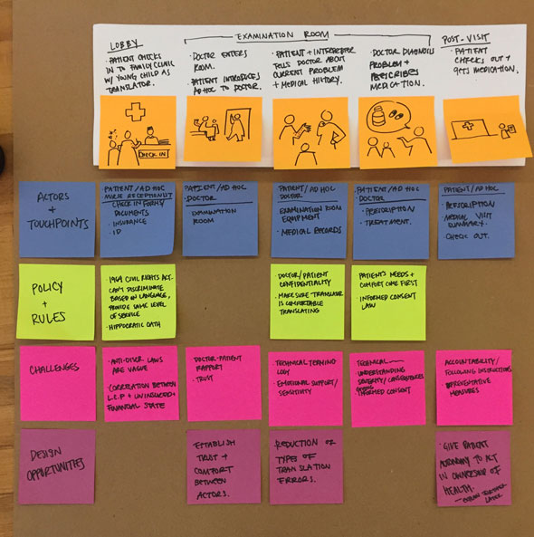
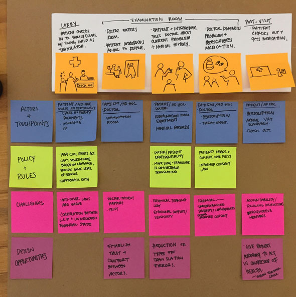

POLLY
Challenge
Bridge the gap in knowledge and resources for Low English Proficiency (LEP) patients in medical and healthcare settings.
Outcome
POLLY is a service that facilitates communication between LEP patients and their doctors by providing interpretation training and resources to non-professional translators.
Role & Contributions
- User research
- Brainstorming and concept ideation
- Prototyping
- Visual design
Teammates
- Lily Kim (designer)
- Helen Kim (developer)
- Sophie Zhao (developer)
Overview & Deliverables
Inaccuracies in medical translation can lead to misinformed, dangerous decisions about a patient's health. Despite this risk, patients often ask unqualified, bilingual caretakers to fill in as "ad hoc" translators instead of a professional, whether due to discomfort or limited resources. We aimed to educate patients about their rights to a professional translator to ensure they can receive quality healthcare.

Pocket Course
The pocket course is designed to provide ad hoc translators with professional training, to bring attention to common errors and recommend best practices in medical translation. It is the initial touchpoint to introduce users to POLLY, and would be available in different languages.


Mobile App
The mobile app offers POLLY's full services. The app aims to support ad hoc translators in their primary role as caretaker, enabling them to send requests for professional translators, help translate more effectively, keep track of the patient's medication, and more.


Research Phase
Identifying the Problem
Through my teammate's personal experience, we became aware of a significant communication barrier for non-English speaking patients in hospital settings, making it difficult for them to get the right treatment. We sought to understand why this was the case.
Ad Hoc Translators
We reached out to people who have acted as non-professional translators (our target users) and had 3 key findings:
- Second generation children of immigrant parents often served older family members as translators.
- Federally funded centers are technically required to offer professional translation services, but many do not as the laws are not enforced.
- There is a strong correlation between LEP and "at-risk" status (uninsured, undocumented, or of low-SES background).
My parents thought I was more legit [than another translator]. And they trust me; if I mess up, they know it wasn't on purpose.
Expert Interviews
As a contrast, we spoke to professionals at health centers in communities with varying English-proficiency levels, and we saw great diversity in how they operated. Doctors working in medically underserved areas seemed more knowledgeable about immigrant needs and were better equipped to serve them. Some clinics were strict on consulting professional translators and had efficient systems to reach them, while others defaulted to using family members.
Family members will put their own spin on things. If they don't understand what the physician is saying, they'll skip it. We use family as a last resort.
 

User Needs
Through our research, we found 4 user needs emphasized by medical professionals, caretakers, and translators:
- The ability to make informed decisions about language services in health care
- Training to minimize common translation errors
- Better communication with doctors and with the patient
- Respect for doctor-patient confidentiality
Design Phase
Pocket Course Development
With our research in mind, we decided one of the best things we could do was to keep ad hoc translators well-informed about their options, their right to request a translator, and best practices should they find themselves in a translator role.
We crafted a “crash course” filled with translation tips from professionals, designed to feel reassuring and fit in the user’s pocket. Our development process involved test prints, paper prototypes, and drafting the course’s content.


App Development
In addition to the Pocket Course, we wanted to offer users more abundant resources with a mobile app. In this process, I conducted research for useful app features, created wireframes and mockup screens, wrote copy, and provided assets for our developers.


Learning Outcomes
- Identifying a problem and its constraints, audience, physical context and assumptions through user research
- Navigating a problem space dealing with sensitive topics and "red tape" research
- Conducting research and using research-driven decisions to design iteratively
- Creating a system with multiple touchpoints and which integrates into existing hospital/healthcare systems
Reflection
If we had time to develop POLLY further, I would love to investigate partnerships with existing medical translation services and Pittsburgh's healthcare infrastructure. It would be interesting to learn how to culminate relationships with health and relocation centers to build a trusted network of resources for LEP clients. Additionally, throughout the course of the project we learned how diverse medical needs are in different geographic areas, so I would like to explore POLLY's concept for more unique and localized needs.